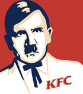
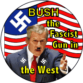
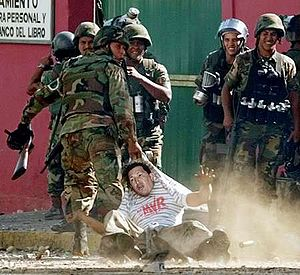

CIA
 De: La Frikipedia, la enciclopedia extremadamente seria.
De: La Frikipedia, la enciclopedia extremadamente seria.
CIA es el acrónimo en inglés de "Communist Integrate Anihilator" una malvada y retorcida organización dedicada a eliminar a todo aquel que no piense como americano (si, americano, estadounidense es para maricas) o bien que no siga al pie de la letra todo lo que Estados Unidos dice. Algunos erróneamente piensan que quiere decir "Central Inteligence Agency" lo cual no es verdad, pues no tiene nada de inteligente o inteligencia. Según el FBI, ahí no se encontró vida inteligente..la CIA se creo como excusa para que todos los tiranuelos tropicales y los anzares de la izquierda mas rancia, tuviesen un "coco" con el cual justificar su mediocridad. un buen ejemplo de esto, es la excusa de que CUBA no se ha desarrollado por culpa del bloqueo, entre otras cosas.
Creación y propósito
 Cuando el enemigo cambia tus métodos también deben hacerlo
La CIA nace de la necesidad del gobierno americano de frenar a los malvados comunista y su afán extorsionista expansionista, puesto que hasta entonces el único talento de los agentes de Estados Unidos era matar nazis, pero los fríos y calculadores comunistas rusos eran enemigos de otro nivel: no sentían frío, no se emborrachaban y no anunciaban su llegada gritando en un idioma incomprensible como hacían los alemanes y los japóneses.
El principal cambio que se dio en las políticas de espionaje con la llegada de la CIA fue la introducción de la sutileza como elemento de espionaje, el anterior método era poco practico ya que no se salvaba mucha información valiosa si entrabas con una ametralladora a una habitación y luego le disparabas a todo lo que se movía. Otros cambios fueron la introducción del entrenamiento en artes marciales,comer papel, danza funk y camuflaje para idiotas.
Otra forma de batalla contra los sangrientos y sádicos rusos comunistas (que eran representados por la KGB) se dio en el campo de los inventos y las maquinas innecesariamente ingeniosas. Los científicos que la CIA reclutaba o secuestraba eran encerrados en enormes jaulas para que diseñaran artilugios que le dieran la ventaja a sus agentes sobre otros espías tales como el auto anfibio, el bolígrafo pistola, la rata palestina suicida y la Trifuerza, la mayoría con resultados desastrosos que acarreaban una o dos docenas de ejecuciones extrajudiciales.
En los años de la guerra fría la principal tarea de la CIA fue aniquilar a los librepensadores, los amantes de la libertad y aquellos que buscaban justicia (siempre y cuando fueran socialistas, claro), así como mantener en el poder a todos los dictadores que siguieran las bondadosas políticas de Estados Unidos tales como Augusto Pinochet, Fransisco Frasco, ese dictador de Argentina que se llamaba manivela o algo asi, Pol Pot, Daniel Ortega (aunque este estaba en el poder por el masoquismo que reina en Nicaragua), Polly Pocket y el Coronel Sanders.
Al terminar la guerra fría la disolución de la Al-Qaeda se dan durante esos dias, evadiendo todo los controles de seguridad que en Norteamerica les ponen (agentes paranoicos, burócratas crueles y soldados tocacojones, la mejor seguridad que un pais puede tener).
Objetivos de Asesinato
- Fidel Castro: El glorioso y bondadoso gobernador que mantuvo a Cuba aislada del malvado imperio gringo es un objetivo obvio para la CIA, pues sus innumerables actos humanitarios (guardar misiles nucleares a la Union Sovietica, no permitir que la gente use internet, preservar la cultura de los años 60 en su país) solo provocaban la ira de los malvados agentes del capitalismo, que trataron de usar muchos métodos, cada uno mas ridículo que el anterior (veneno en los sorbetes, una zancadilla en actos públicos, pasarle su factura de gastos médicos en el exterior).
- Mao Tse-Atun: Otro benevolente gobernador elegido de forma alternativa por si mismo que enfurecio a Occidente con sus actos humanitarios (salvo pre-condenar a su pueblo a un vida fabricando zapatos, la mayoría eran humanitarios de verdad), si no lograron matarlo es porque el mero hecho de ser chino ya lo hacia experto en 3 disciplinas de artes marciales e ingeniería electrónica.
- El comandante Ernesto Che Guevara: La historia que nos vende el imperio de occidente es que el Che fue asesinado por pertenecer a la causa del comunismo y la unión de los pueblos americanos bajo una sola bandera, pero detrás de esto se esconde una oscura historia relacionada con la venta de marketing y camisetas varias, pues los fabricantes de ropa de marca sabían que si el Che moría en medio de la nada y lejos de la civilización (es decir Bolivia) las ventas de productos con su cara se iban a disparar al infinito y mas allá.
- Jason Bourne: Un agente que conoce los mas oscuros secretos de la organización con los mas oscuros secretos no es alguien que pueda andar por ahí como si fuera el vocalista de U2, por eso la CIA le borra la memoria y luego lo persigue para matarlo, lo que demuestra que detrás de una de las agencias mas temidas del mundo se encuentran unos paquetes que no tienen la mas mínima idea de donde están parados (si de todas maneras lo van a matar para que le borran la memoria, leñe).
- Hugo Chávez: Este hombre era la prueba viviente de la existencia de la reencarnación, en solo 2 vidas paso de ser un orangután mamerto a ser el presidente de Venezuela, la CIA solo trataba de matarlo porque no se lo aguantaba ni su madre y es mas, para poder deshacerse de el esta agencia firmo un tratado de cooperación con otros servicios de espionaje, varias pandillas centroamericanas y un grupo de cumbia villera. A Chávez lo terminaría matando un cáncer provocado por el analfabetismo de su vicepresidente Nicolas Maduro.
Miembros y personas a las que la CIA apoya
 Si cumples con al menos 4 de estas condiciones, puedes unirte
- George W. Bush
- George Bush el viejo
- Aquellos SWAT que viven pensando que todavia vivimos en la guerra fria.
- El dueño de BP, como sea que se llame
- Mecha-Hitler
- Los Illuminati
- Los Francmasones
- Los reptilianos
- Los banqueros judíos
- El coronel Sanders y sus fiel ejercito
- Esos malvados dirigentes oligárquicos dictatoriales absolutistas fachas conocidos como los administradores de la frikipedia, que malos son.
- Sephiroth y Kefka Palazzo
- Videla, Pinochet & asociados.
Países donde la liaron
- Afganistán: En un principio estuvieron luchando contra los soviets para establecer un gobierno talibán títere, con la esperanza de que alguna ley islámica diese descuentos en el petroleo a la Standard Oil, pero luego los usaron como chivos expiatorios para satisfacer las ansias de
grasa sangre de unos cuantos derechistas republicanos tras el fin del mundo, el 11 de Septiembre del 2011. Finalmente Barrack Osama los retiraría.
- Irak: Al igual que en Afganistán su primera misión fue implantar un gobierno títere que fabricara cupones de descuento en la gasolina, pero no se fijaron en la persona que pusieron al mando, un loco que creía que los musulmanes tenían sub-tipos y casualmente creía que el sub-tipo que el odiaba estaba siendo apoyado por la orgullosa América, esto fue aprovechado para invadir con el pretexto de traer la paz y cargárselo, junto con toda evidencia comprometedora.
- Vietnam: Aquí el Dr.Manhattan desintegraba a los comunistas con los dedos, así que solo estuvieron tocándose los cojones.
- Cuba: Ayudaban al "Movimiento de resistencia cubana" (posteriormente conocido como "El publico de los programas de Univision" en Estados Unidos, y los Latin Kings en España) con todos los planes para asesinar al comandante Fidel que se le ocurrían a un fan de James Bond, también eran barrenderos en Guantanamo hasta que Enron cayo en la bancarrota y sus empleados fueron transferidos allí.
- Libia: Trataban de matar a Gadafi, pero los muy paquetes nunca dejaron de fallar.
- Venezuela: Para reducir el precio del petroleo era vital deshacerse de Hugo Chávez, trataron de hacerlo con balas, pero mataban a sus seguidores, trataron de envenenarlo pero el cianuro aumentaba su carisma y trataron de derrocarlo bloqueando los suministros, pero el ya estaba en Cuba, donde murió al leer Cuanto Cabrón. Lo malo es que lo reemplazo alguien por lo menos 200 veces peor que usaba la constitución como papel sanitario.
- Japón: En realidad nunca hicieron nada, solo enviaban agentes para que fueran asesinados por Kira.
Teorías sobre su Acronimo
- Lo primero que oculta la Cia es su verdadero acrónimo desconocido por todos menos ellos Conspiracy of illiterate armed (Conspiración de analfabetos armados) esto encaja perfectamente con sus acciones y su ideología.Aunque debido a los amiguitos empresarios de los políticos ahora el acrónimo significa Stratfor Global Intelligency ,así nadie pensará que son e la CIA y podrán enfrentarse al CNI,Mossad sin que nadie se entere(ni ellos mismos).
- Hay otra organización que usa ese mismo nombre en Cristianos en África), y Asia, Almeria, Alburquerque o los Alpes (en general cualquier lugar cuyo nombre empieze por A) son nombres alternativos aceptables).
 Agentes de la CIA llevandose al Chimpancé de vuelta a la jaula
- Tambien según Hugo Chávez es una agencia capitalista y transnacional que quiere apoderarse de Ámerica Latina, el junto a Fidel Castro la están tratando de eliminar.
- La CIA o Communal Integration Apple (Integración comunal con Apple) es una manzana realmente grande encontrada en muchas ciudades, excepto en Santiasco de Shile, prque no existe).
tiene un pintoresco caracter proselitista, ya que si usted la menciona en cualquier meeting politico, de las BANANA REPUBLIC, es bastante probable que gane las elecciones de su pais , como lo hizo el cocainomano de EVO MORALES.
Modus Operandi
¿Algunos terroristas que planean atacar algo? No importa, la CIA pone todo en manos de Yahvé (más conocido como Dios).
si usted es gobernante usela como excusa cada vez que le pregunten donde se extraviaron los fondos publicos,o cuando la gente sospeche que vive en un pais del tercer mundo, que hace diplomacia petrolera, pero no tiene dos metros de asfaltos dignos de ser llamado carreteras; también es un buen somnifero, y se sospecha que pronunciar esta tres letras juntas genera un misterioso efecto afrodisiaco.
Autor(es):
- Nexo
- Alexan
- Toxie
- Doctor grijander
- Acaymo
- Yavhetil
- Frikih
- Corleone
- Cibercrank
- Mad Max
Frikipedia 2005-2016, Licencia
GFDL 1.2 - Extraído por FrikiLeaks